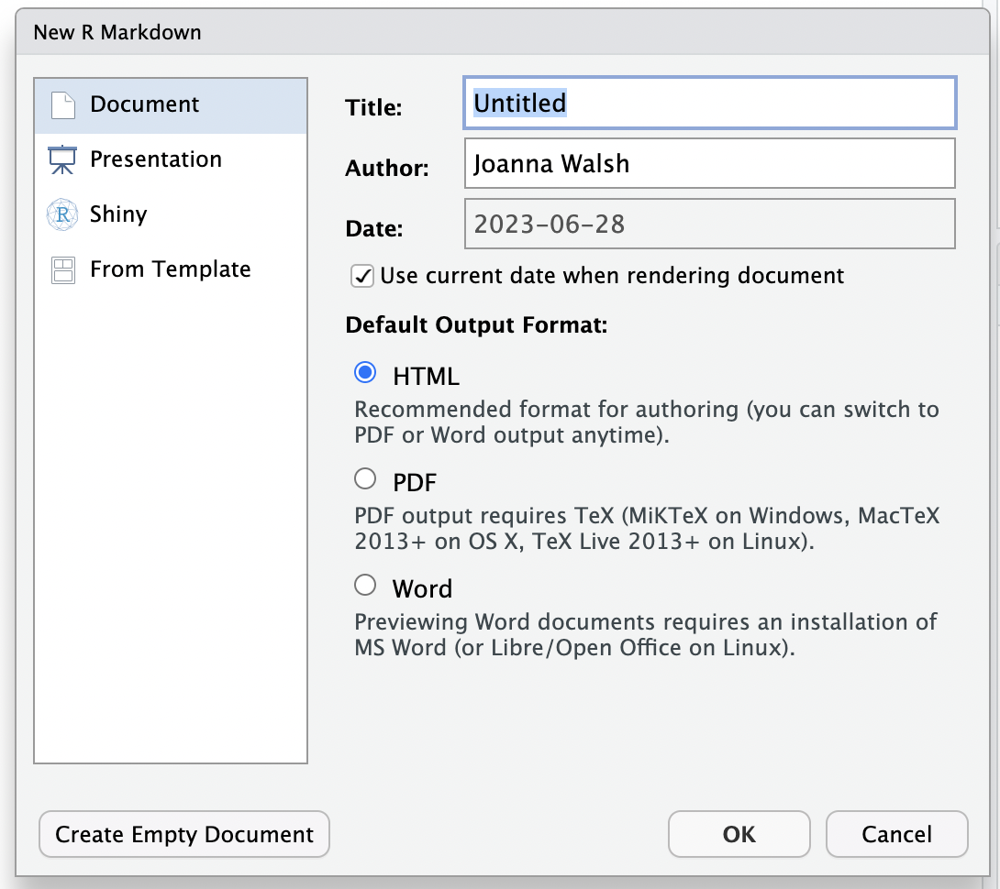
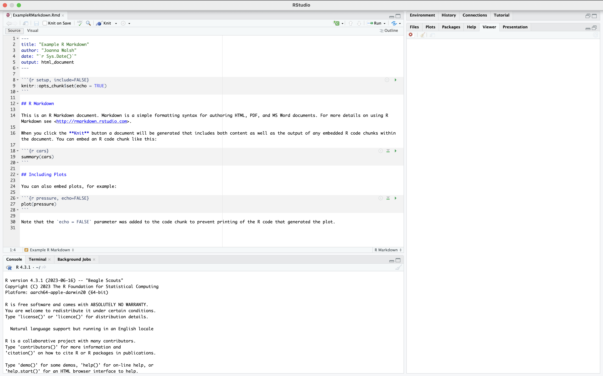
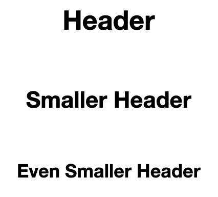
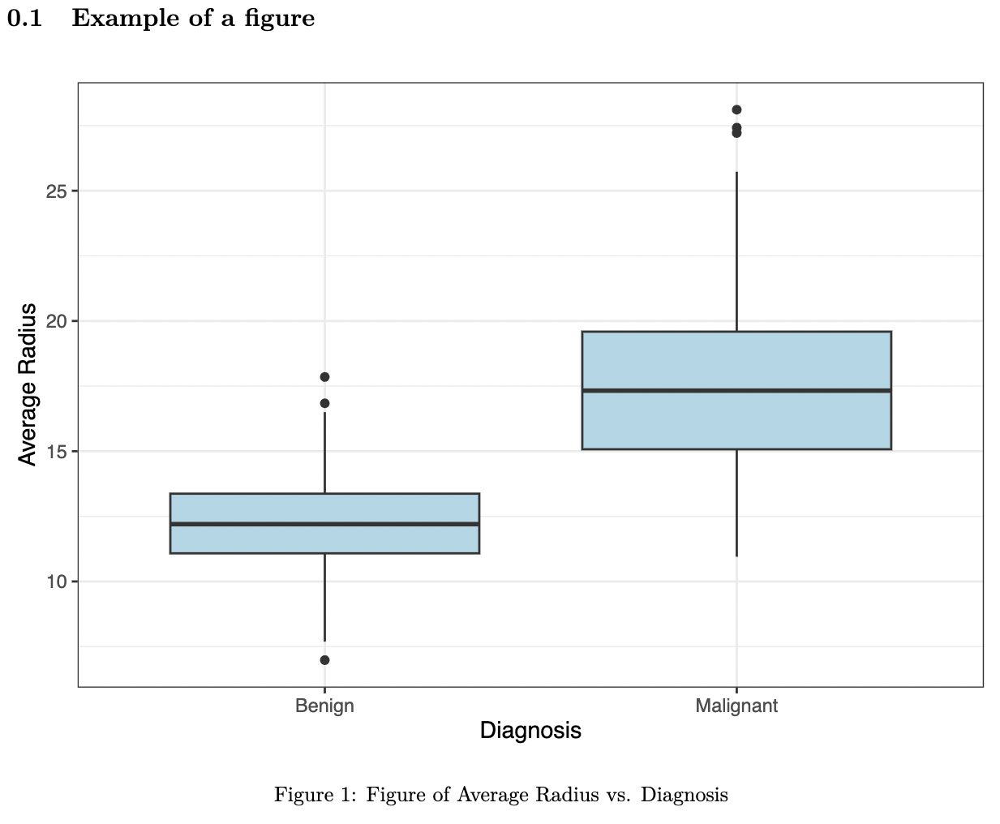
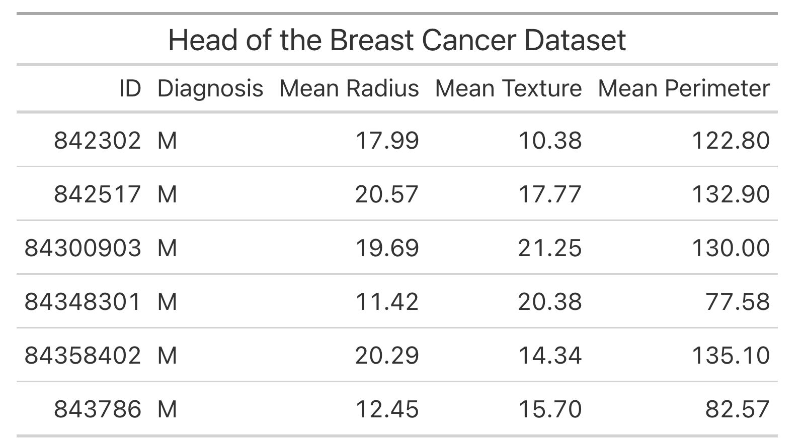

breastcancer %>%
select(id, diagnosis, radius_mean, texture_mean, perimeter_mean) %>%
head()
#> id diagnosis radius_mean texture_mean perimeter_mean
#> 1 842302 M 18.0 10.4 122.8
#> 2 842517 M 20.6 17.8 132.9
#> 3 84300903 M 19.7 21.2 130.0
#> 4 84348301 M 11.4 20.4 77.6
#> 5 84358402 M 20.3 14.3 135.1
#> 6 843786 M 12.4 15.7 82.612 Writing Reports in R Markdown
This chapter will introduce you to R Markdown, which is a document format that combines markdown text with R code. Writing in R markdown can help you write reproducible code and create polished reports to present your analyses.
12.1 Starting an R Markdown file
To create an R Markdown file, you will need to have RStudio installed as an application. You’ll also need to install the rmarkdown package (Xie, Dervieux, and Riederer 2020) in addition to the knitr package (Xie 2023). We also recommend the bookdown package (Xie 2016), which allows us to create section, figure, and table references, as well as the kableExtra package (Zhu 2021) for formatting your tables.
Now that you have these packages downloaded, opening a new R Markdown file is very similar to opening a new R file, which was covered in Chapter 1. Just like opening a new R file, you’ll want to go to File -> New File, but instead of selecting ‘R Script’, you’ll now select ‘R Markdown…’. This should bring up a window that looks like Figure 12.1.

First, enter a title of your choosing for your report and type your name in the Author field - note that you can always change these later - and then click on OK. This will open an R Markdown file that has the extension .Rmd. Make sure to save this file with a suitable name in your desired location on your computer by selecting File -> Save, and then you’re ready to start writing your report! Your file should now look like Figure 12.2.

You will write all of the text and code that you would like to include in your report in this .Rmd file, and then you can produce a nicely formatted report from this file by ‘knitting’ the file. You can either knit to HTML, PDF, or WORD by clicking on the knit icon  from the toolbar at the top of the page and then selecting your desired output file type.
from the toolbar at the top of the page and then selecting your desired output file type.
12.1.1 Adding Code Chunks
Each of the darker gray rectangles is called a code chunk - all of the code used to generate your report will go in these chunks, and all of your writing will go between them. Each code chunk starts with ```{r} and ends with ```. To create a chunk, you can either
click on this green “add chunk” symbol
 in the toolbar at the top of the page,
in the toolbar at the top of the page,type
```{r}and```, ORuse the keyboard shortcut Ctrl + Alt + I (Cmd + Option + I on Macs).
To run the code in a chunk, you can either use the keyboard shortcut Ctrl + Enter (Cmd + Return on Mac), or you can use one of the following buttons at the top right of the chunks:  runs all chunks above the current chunk and runs the current chunk.
runs all chunks above the current chunk and runs the current chunk.
12.1.2 Customizing Chunks
You can specify whether you want to include the code and/or its various output in your final report by adding the following commands, separated by commas, to the right of the {r} at the top of the code chunk:
include = FALSEmakes it so that neither code nor its output will appear in your report.echo = FALSEmakes it so that the output of the code but not the code itself will appear in your report.message = FALSE,warning = FALSE, anderror = FALSEmake it so that messages, warnings, and errors (respectively) that are generated from the code in the chunk won’t appear in your report.
To customize a single code chunk, you can either type one of the above commands next to the {r} at the top of the code chunk by yourself or you can click on the ‘Modify Chunk Options’ symbol at the top right of the code chunk and change the settings there.
To apply the same customizations to all chunks in the document at once, you can add them to the first chunk at the very top of your R Markdown that starts with ```{r setup, include=FALSE} using the knitr::opts_chunk$set() function. These are called the global settings. For example, using the following code for your first code chunk will make it so that none of the errors, warnings, or messages from any of the code chunks will appear in your final report. It is also good practice to load all the packages you are using for your report within this first code chunk using the library() function. For example, below we load the tidyverse and HDSinRdata packages.
If you want to display the code for your report in a code appendix, you can easily do this by creating an empty code chunk at the end of your .Rmd file with these chunk options ref.label=knitr::all_labels(), echo = TRUE, and eval = FALSE.
::: {.cell layout-align="center"}
```{.r .cell-code .code-overflow-wrap}
library(tidyverse)
library(HDSinRdata)
library(kableExtra)
library(gt)
data(breastcancer)
knitr::opts_chunk$set(echo = TRUE, warning = FALSE, error = FALSE, echo = FALSE)
library(tidyverse)
library(HDSinRdata)
breastcancer %>%
select(id, diagnosis, radius_mean, texture_mean, perimeter_mean) %>%
head()
breastcancer %>%
select(id, diagnosis, radius_mean, texture_mean, perimeter_mean) %>%
head() %>%
kable(caption = "Head of the Breast Cancer Dataset",
col.names = c("ID", "Diagnosis", "Mean Radius", "Mean Texture",
"Mean Perimeter")) %>%
kable_styling(latex_options = c("scale_down", "HOLD_position"))
breastcancer %>%
select(id, diagnosis, radius_mean, texture_mean, perimeter_mean) %>%
head() %>%
gt() %>%
tab_header(title = "Head of the Breast Cancer Dataset") %>%
cols_label(id ~ "ID",
diagnosis ~ "Diagnosis",
radius_mean ~ "Mean Radius",
texture_mean ~ "Mean Texture",
perimeter_mean ~ "Mean Perimeter")
```
:::You can also have inline R code by using single backticks around your code 3. The code must start with r to be run when knit. This allows you to reference variables in your text. For example, we could display the variance of a column in our data without having to copy the value over.
27.96
12.2 Formatting Text in Markdown
To add text to your report, you can simply type directly into the R Markdown file, between the code chunks. This code is formatted using markdown, which allows us to specify how to format and display the text when it is knit. For example, adding a single asterisk * on either side of some text will italicize it, while adding a double asterisk ** on either side of text will make it bold. To indicate code, you can use backticks `.
regular text regular text
*italicized text* italicized text
**bolded text** bolded text
`code text` code text
To create headers and sections, you can add the # symbol in front of your text. Adding more of these symbols makes the headers smaller, which is useful for making subheaders.
# Header
## Smaller Header
### Even Smaller Header

You can also add links [text](www.example.com) and images 
The Markdown Guide has a great cheat sheet as well as more resources for formatting markdown text.
12.3 Formatting Figures and Tables
Often, you’ll want to include figures generated by your code in your report, and you can customize these figures by changing the chunk options for the chunks that produce them. To change the size of a figure, you can add in the chunk option out.width="50%" with your desired percentage of the full size. To add a nice caption to a figure in your report, you can add fig.cap = 'Your Desired Caption.. To name a figure, you can add a name next to the r in the chunk options, without a comma, like {r figname}. Alternatively, you can name figures by entering text into the ‘Chunk Name’ field using the ‘Modify Chunk Options’ button at the top right of a chunk.
By default, the figures generated by your code chunks are allowed to ‘float’ in R Markdown - this means that the figures might move away from where they were coded or referenced in the final report. If you don’t want this to happen, you can customize the chunk that contains the code to produce the figure by adding fig.pos = "H" to that chunk’s options. If you want to prevent floating for all figures, add fig.pos = "H", out.extra = '' to the first code chunk in the file (the one that starts with the knitr::opts_chunk$set() function).
```{r myfigure, fig.cap="Figure of Average Radius vs. Diagnosis", out.width="75%",
fig.pos="H"}
data(breastcancer)
ggplot(breastcancer) +
geom_boxplot(aes(x = diagnosis, y = radius_mean), fill = 'lightblue') +
theme_bw() +
labs(y = "Average Radius") +
scale_x_discrete("Diagnosis", labels = c("Benign", "Malignant"))
```
If you want to make data frames, matrices, or tables from your raw R output more polished and aesthetically pleasing, you can use the gt and kableExtra packages. Be sure to load the package you are using to the code chunk at the top of your R Markdown file that contains all of your libraries.
To demonstrate the abilities of these package, let’s suppose that we wanted to display the head of the first few columns of the breastcancer dataset from the HDSinRdata package. The following code produces the following output in the knitted pdf report - you can see that it essentially just copies the raw output from R, which is rather messy.
We use the kable() and kable_styling() functions from the kableExtra package to produce a more nicely formatted table. The kable() function generates a table from a data frame. The kable() function allows you to specify some display options for your table. For example, you can add a caption to your table using the caption argument, and you can change the names of the columns in the table using the col.names argument. The kable_styling() has additional options available. Similar to the fig.pos = H command described for figures in the previous section, adding “HOLD_position” to the kable_styling() function will prevent the table from floating on the report; adding "scale_down" scales the table so that it fits in the margins of the paper. The updated code and output are below. See the documentation for the kable() and kable_styling() functions for more options available.
breastcancer %>%
select(id, diagnosis, radius_mean, texture_mean, perimeter_mean) %>%
head() %>%
kable(caption = "Head of the Breast Cancer Dataset",
col.names = c("ID", "Diagnosis", "Mean Radius", "Mean Texture",
"Mean Perimeter")) %>%
kable_styling(latex_options = c("scale_down", "HOLD_position"))| ID | Diagnosis | Mean Radius | Mean Texture | Mean Perimeter |
|---|---|---|---|---|
| 842302 | M | 18.0 | 10.4 | 122.8 |
| 842517 | M | 20.6 | 17.8 | 132.9 |
| 84300903 | M | 19.7 | 21.2 | 130.0 |
| 84348301 | M | 11.4 | 20.4 | 77.6 |
| 84358402 | M | 20.3 | 14.3 | 135.1 |
| 843786 | M | 12.4 | 15.7 | 82.6 |
Above, we can see that kable produces a much nicer table in the knitted pdf that is more suitable for a data analysis report. In Chapter 4, we also introduced the gt package. This package is an alternative package to kableExtra that allows you to format each part of the table and includes options for formatting the columns, adding footers or subtitles, or grouping your table. See the package introduction for more details about this package. An example gt table is given below.
breastcancer %>%
select(id, diagnosis, radius_mean, texture_mean, perimeter_mean) %>%
head() %>%
gt() %>%
tab_header(title = "Head of the Breast Cancer Dataset") %>%
cols_label(id ~ "ID",
diagnosis ~ "Diagnosis",
radius_mean ~ "Mean Radius",
texture_mean ~ "Mean Texture",
perimeter_mean ~ "Mean Perimeter")
12.4 Using Bookdown for References
R Markdown automatically adds figure and table numbers to the figures and tables in your report. The bookdown package allows us to add references. To use this package, make sure you have installed the bookdown package and then add the following text to the top of your .Rmd file, next to “output”.
output:
bookdown::pdf_document2:
toc: falseThe above code specifies that you would like to knit your file to a pdf document. If you would like to knit your file to an html or word document instead, you could type bookdown::html_document2 or bookdown::word_document2. The toc: false indicates that you do not want to include a table of contents in the report - if you do want one, you can simply type toc:true instead. Once you’ve done this, you can reference figures and tables using their names: \@ref(fig:figname)) or \@ref(tab:tablename). The knitted pdf will substitute the appropriate figure or table number into your text.
Additionally, we can reference sections by adding in labels to the section header. For example, we added the tag #awesome for the section below and can now reference it using \@ref{awesome}.
## Awesome Stuff {#awesome}
12.5 Adding in Equations
Another useful option in markdown is the option to add in mathematical equations. If you want to insert math equations, you can do so by writing LaTeX expressions. To write a math equation inline, you put a single dollar sign $ on either side of your equation, and to write a math equation on its own line, you put a double dollar sign $$ on either side of the equation, like so:
Here’s an equation that is inline with the text: $5x^2 + 9x^3$ produces \(5x^2 + 9x^3\). On the other hand, here’s an equation that is on its own line: $$5x^2 + 9x^3$$ produces \[5x^2 + 9x^3\]
Here is some other LaTeX notation that you should know in order to write common equations: * To create a fraction, type \frac{numerator}{denominator}. For example, \frac{2}{3} produces \(\frac{2}{3}\). * To create a subscript, type _. For example, x_{2} produces \(x_2\). * To create a superscript, type ^. For example, x^{2} produces \(x^2\).
If you want to learn more about how to write in LaTeX, Art of Problem Solving provides a great reference for LaTeX symbols and Overleaf provides a helpful introduction to LaTeX in general.
12.6 Exercises
The exercise for this chapter is to recreate this example pdf created from an R Markdown file. You will need to use the breastcancer dataset from the HDSinRdata package.